Stetigkeit impliziert Folgenstetigkeit
1. Satz
Seien  und 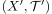 topologische Räume und
und 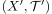 topologische Räume und  eine stetige Abbildung.
Dann ist
eine stetige Abbildung.
Dann ist  auch folgenstetig
auch folgenstetig
2. Beweis
Sei 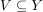 eine Umgebung von  , so ist nach Annahme 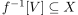 eine Umgebung von
, so ist nach Annahme 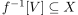 eine Umgebung von  Daraus folgt, dass fast alle Folgenglieder 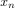 in 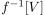 liegen.
Somit gilt auch, dass fast alle Folgenglieder von 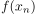 in
Daraus folgt, dass fast alle Folgenglieder 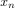 in 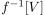 liegen.
Somit gilt auch, dass fast alle Folgenglieder von 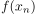 in  liegen.
Damit ist auch folgenstetig
liegen.
Damit ist auch folgenstetig